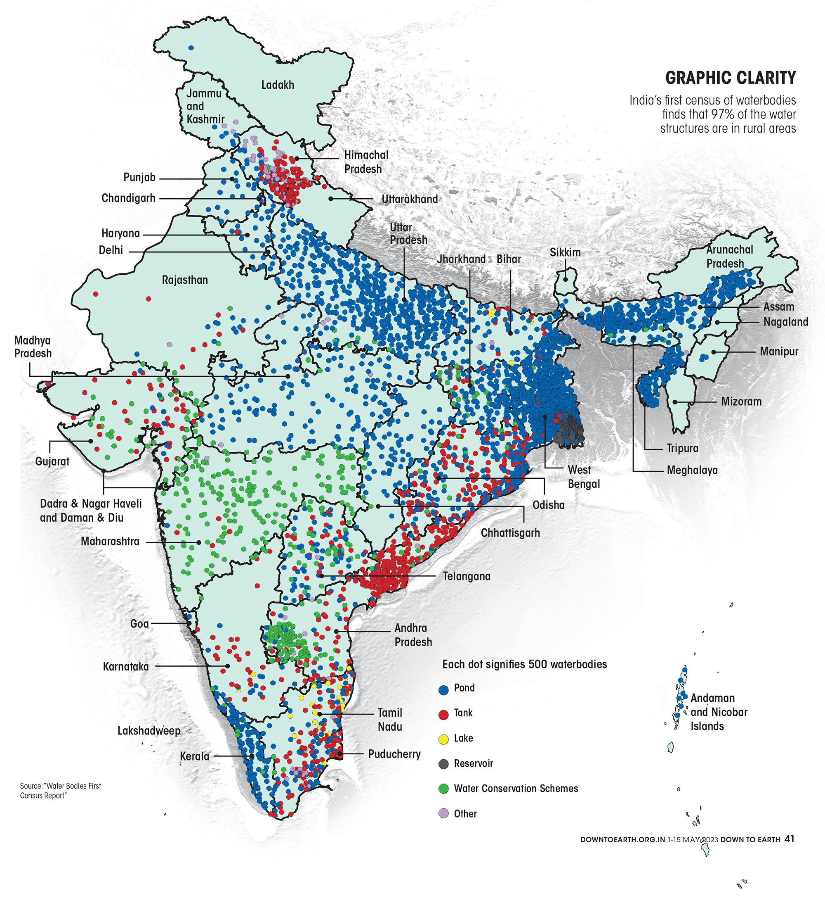
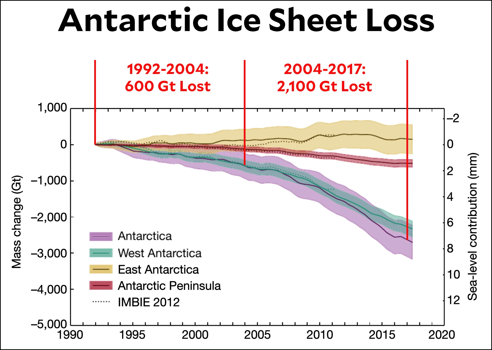

Some of the larger lake systems of Bengaluru. The networks have been fragmented due to encroachment into lakes and connecting canals/rajakaluves.

The findings show that there are 2,424,540 waterbodies in the country, of which 97 per cent are in rural areas. Of the total waterbodies, 59.5 per cent are ponds, 15.7 per cent are tanks, 12.1 per cent are reservoirs, and the remaining 12.7 per cent are structures created under water conservation schemes.

In the 12 years between 1992 and 2004, the Antarctic lost about 50 gigatonnes of ice per year. In the 13 years between 2004 and 2017, it lost about 160 gigatonnes per year. In the past five years, that’s accelerated to over 200 gigatonnes per year.

Maps of linear trends (in oC per decade) of Arctic (a, c) and Antarctic (e, g) sea surface temperature (SST) for 1982−2017 in March (a, e) and September (c, g). (b, d, f, h) same as (a, c, e, g), but for the linear trends of sea ice concentration (in % per decade).